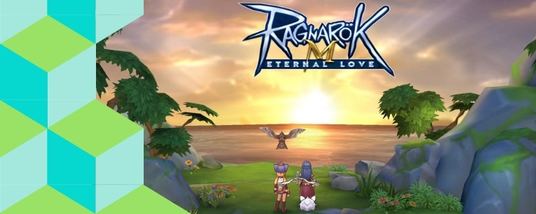

Step 1 – Level 1-28 (Day 1)

Di awal permainan, kamu akan
menemukan banyak quest tutorial
yang mengajarkan bagaimana
cara berjalan, bertempur,
menaikan status point, skill point,
mendapatkan emoticon, dan lain-lain.
Di map South Prontera ini,
selesaikan semua quest dengan efektif,
tidak perlu memukul musuh
yang tidak harus dipukul (untuk menghemat combat time).
Berikut adalah beberapa keterangan jenis-jenis quest yang ada
di Ragnarok Eternal Love :
Quest Kuning – Main Quest
Quest Hijau – Side Quest
Quest Biru – Daily Quest
Menyelesaikan seluruh quest yang ada di South
Prontera akan membawa kalian ke
level 10 dan quest
berikutnya akan membawa kalian ke ibu kota Rune
Midgard yaitu Prontera.
Ikuti terus main quest yang
akan membawa kalian ke quest Job Change.
Silahkan pilih
Job yang kamu inginkan.
Setelah berubah job, selesaikan main quest yang akan membawamu ke area West Prontera. Disini kamu bisa mengerjakan quest-quest yang ada sama seperti di awal permainan, hingga kamu mencapai level 18 atau level 19. Apabila kamu telah mengerjakan semua quest di West Prontera dan mencapai level 18/19, segera ke North Prontera untuk grinding monster bernama Wormtail (Lv17), auto disana sampai kamu memiliki combat time tersisa sekitar 100. Gunakan 100 combat time tersebut untuk melakukan 1x Monster Resistance (Daily Quest) di Wormtail kembali , atau Goblin Forest, Sunken Ship, dan Ghost Ship, setelah itu, sisanya kamu bisa mengerjakan quest board serta rift fixing. Di tahap ini kamu akan mencapai kurang lebih level 27 atau 28 ketika combat time kamu habis.
Step 2 – Level 28-40 (Day 2)
Karena Day 1 kamu mengerjakan 1x Monster Resistance, maka kamu akan memiliki 3 jatah untuk melakukan daily quest tersebut lagi. Kerjakan seluruh quest dimulai dari quest Izlude (Sunken, Ghost Ship, Byalan), Goblin Forest dan Mjolnir, setelah itu kamu bisa segera mengerjakan quest papan dan Rift Fixing. Setelah itu, seharusnya level kamu berada di antara level 33 hingga level 36. Dari sini kamu JANGAN menghabiskan 3x jatah Monster Resistance, tetapi kamu bisa melakukan auto di Mjolnir, berburu monster bernama Hornet. Disarankan untuk menggunakan Lightning Chain kalau kamu merupakan premium user. Habiskan seluruh sisa Combat Time kamu disini.
Perlu diketahui bahwa quest papan dan rift fixing akan tetap memberikan kamu exp meskipun combat time kamu telah habis. Oleh karena itu ada baiknya menghabiskan seluruh combat time terlebih dahulu baru mengerjakan quest papan serta rift fixing. Namun karena menghabiskan stamina secara grind di day 2 cukup lama, maka admin menyelesaikan seluruh quest papan dan rift fixing terlebih dahulu, baru grind auto sembari ditinggal untuk melakukan aktifitas yang lain. Jatah 3x monster resistance kamu akan di keep untuk level 40 ke level 50.
Step 3 – Level 40-50 (Day 3)
Pertama, selesaikan seluruh main quest dan side quest hingga main quest kamu terkunci yakni di level 50 untuk main quest kota Morroc. Setelah quest terkunci, biasanya player akan kebingungan dan menghabiskan waktu cukup banyak di level 40 ke 50. Oleh karena itu kita menyimpan jatah Monster Resistance sebanyak 5 kali untuk hari ke-3 ini. Selesaikan terlebih dahulu seluruh quest papan atau quest board dengan baik dan efektif, setelah itu kalian bisa melakukan power leveling dengan menggunakan 10x Exp Monster Resistance. Di early level 40an kamu bisa terus berburu Hornet hingga mencapai level 45, setelah itu kamu bisa pindah ke Metaller di North Prontera. Sangat disarankan untuk hunting menggunakan full party yang memiliki level setara untuk power leveling di level 40 ke level 50. Apabila kalian berhasil mencapai level 50 di hari ini, habiskan jatah Rift Fixing kalian untuk Payon Rift.
Step 4 – Level 50-60 (Day 4-5)
Level 50 keatas merupakan fase yang cukup berat namun tetap bisa diselesaikan apabila kalian rajin main dan menemukan hunting spot yang efektif. Back to basic, tetap selesaikan seluruh main quest kalian, dan gunakan Monster Resistance quest apabila kalian menemukan quest yang terkunci karena level tidak mencukupi. Hunting Spot efektif untuk level 50-60 tetap di Metaller atau Dustiness. Tentu saja, tetap sangat disarankan untuk full party saat melakukan auto grinding. Dalam 1 hingga 2 hari, kalian akan mencapai level 60 dengan grind di spot ini.
Hasil akhir dari grinding ini tentu saja berbeda-beda antar pemain, karena tingkat efisiensi hunting tiap job, premium card, jenis makanan, serta anggota party, berpengaruh kepada kecepatan kamu leveling. Jangan takut berkenalan dengan player lain karena disitu letak serunya bermain Ragnarok Online. Have fun and Ciaossu!